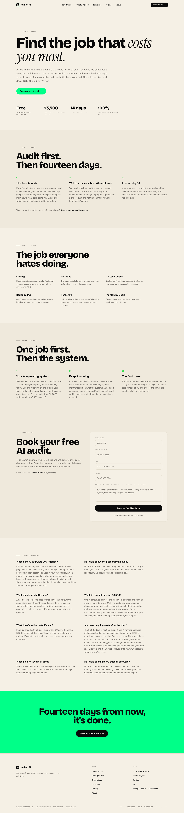

The whole page at 1440, scaled down. Left: /pilot as it is, the May register. Right: the sample written page that skeleton B would show at size near the top.
/pilot todayhero, how it works, what it fixes, after the pilot, form, questions, the green close

/pilot/sample-auditthe written page an owner gets back